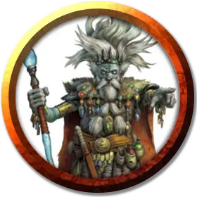

Наррак
Narrak
Маленький Гуманоид (Дерро), хаотично-злой, именной НИП

Класс Доспеха 12 (15 с доспехами мага)
Хиты 40 (9к6 + 9)
Скорость 30 футов
| мод | спас | ||
|---|---|---|---|
| СИЛ | 9 | −1 | −1 |
| ЛОВ | 14 | +2 | +4 |
| ТЕЛ | 13 | +1 | +1 |
| мод | спас | ||
|---|---|---|---|
| ИНТ | 14 | +2 | +2 |
| МДР | 5 | −3 | −3 |
| ХАР | 16 | +3 | +5 |
Навыки Магия +4, Скрытность +4
Чувства тёмное зрение 120 футов, пассивное Восприятие 7
Языки Дварфийский, Подземный
Опасность 2 (450 опыта)
Бонус мастерства +2
Особенности
Безумие. Наррак обладает преимуществом к спасброскам против очарования и страха.
Сопротивление магии. Наррак обладает преимуществом к спасброскам против заклинаний и других магических эффектов.
Использование заклинаний. Наррак – заклинатель 5-го уровня. Его базовой характеристикой является Харизма (Сл спасброска от заклинаний 13, +5 к попаданию заклинательными атаками). У Наррака две ячейки заклинаний, которые восстанавливаются после совершения им короткого или продолжительного отдыха, и он знает следующие заклинания колдуна:
• Заговоры (неограниченно): мистический заряд [eldritch blast], дружба [friends], ядовитые брызги [poison spray];
• 1 уровень: доспех Агатиса [armor of Agathys], очарование личности [charm person], сглаз [hex];
• 2 уровень: удержание личности [hold person], луч слабости [ray of enfeeblement], паук [spider climb].
Чувствительность к солнечному свету. Наррак совершает с помехой броски атаки и проверки Мудрости (Восприятие), основанные на зрении, находясь на солнечном свете.
Действия
Доспехи теней (Перезарядка после короткого или продолжительного отдыха). Наррак накладывает на себя заклинание доспехи мага [mage armor].
Короткий меч. Рукопашная атака оружием: +4 к попаданию, досягаемость 5 фт., одна цель. Попадание: Колющий урон 5 (1к6 + 2).
Единство с тенями. Пребывая в тусклом освещении или тьме, Наррак может становиться невидимым. Он остается таковым до тех пор, пока не совершит движение, действие или реакцию.